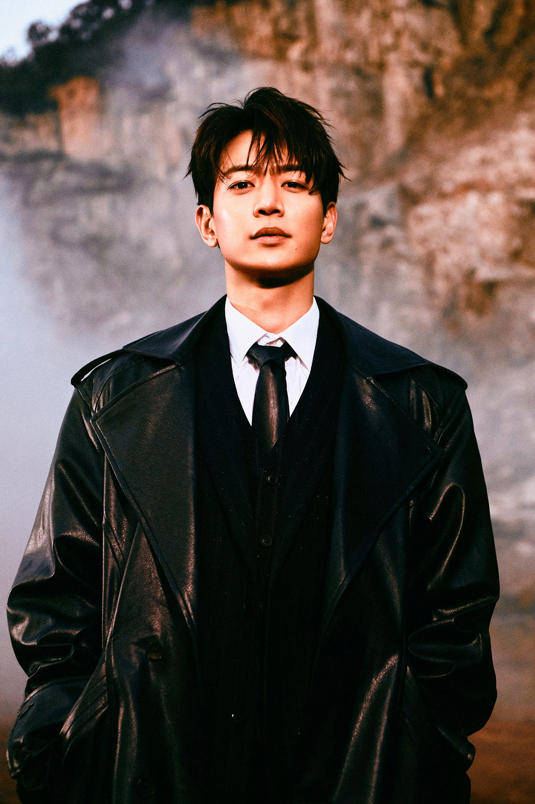

Choi MinHo
Biografía

Minho, cuyo nombre real es Choi Min-ho, nació el 9 de diciembre de 1991 en Incheon, Corea del Sur. Es cantante, rapero, actor y modelo, conocido por ser integrante del grupo SHINee, con el que debutó en 2008 bajo la agencia SM Entertainment.Desde sus inicios, Minho destacó por su presencia escénica, carisma y habilidades físicas, convirtiéndose en uno de los miembros más versátiles del grupo tanto en el ámbito musical como en otras áreas del entretenimiento.
Trayectoria
Actuación
Además de su carrera musical, Minho ha desarrollado una sólida trayectoria como actor. Ha participado en diversos dramas y producciones televisivas, demostrando su capacidad interpretativa en distintos géneros. Entre sus trabajos más destacados se encuentran sus participaciones en series como To The Beautiful You (2012) y Hwarang (2016), donde logró ampliar su reconocimiento dentro de la industria del entretenimiento.

Actividades
Sus Actividades como Deportista
Sus actividades como deportista han sido uno de los rasgos más característicos de la imagen pública de Choi Min-ho, integrante del grupo SHINee. Minho es ampliamente reconocido por sus habilidades deportivas y su entusiasmo por la actividad física. Desde joven mostró interés por distintos deportes, destacándose especialmente en disciplinas como el fútbol, el atletismo y diversas pruebas de resistencia física.
A lo largo de su carrera ha participado en múltiples competencias deportivas organizadas para artistas y celebridades, particularmente en eventos televisivos como Idol Star Athletics Championships, donde numerosos idols compiten en distintas disciplinas. En este tipo de programas Minho ha demostrado habilidades sobresalientes en pruebas de velocidad, salto y relevos, ganándose la reputación de ser uno de los participantes más competitivos y disciplinados.
Su desempeño en estas competencias ha llamado la atención tanto del público como de los propios presentadores y compañeros de industria, quienes frecuentemente han destacado su gran condición física, su resistencia y su fuerte espíritu competitivo. Estas cualidades le han valido el reconocimiento como uno de los idols más atléticos dentro del K-pop, siendo incluso apodado en diversas ocasiones como uno de los artistas con mayor energía y determinación en actividades deportivas.
Además de las competencias televisivas, Minho ha demostrado en varias ocasiones su interés personal por mantener un estilo de vida activo. La práctica constante de ejercicio físico forma parte importante de su rutina diaria, lo que contribuye no solo a su salud y bienestar, sino también a su desempeño en actividades que requieren resistencia física, como presentaciones escénicas, ensayos coreográficos y otras actividades relacionadas con el entretenimiento.
En este sentido, su disciplina deportiva y su entusiasmo por el ejercicio han sido aspectos que complementan su imagen pública, proyectándolo como una figura activa, competitiva y comprometida con el cuidado de su condición física dentro de la industria del entretenimiento surcoreano.
Filmografía
Series de Televisión
| Año | Título | Rol | Canal | Notas | Ref. |
|---|---|---|---|---|---|
| 2010 | Pianist | Oh Je-ro | KBS | Drama Especial | |
| 2012 | Salamander Guru and The Shadows | Choi Min-hyuk | SBS | Sitcom | |
| 2012 | To The Beautiful You | Kang Tae-joon | SBS | Versión coreana de Hana Kimi | |
| 2013 | Medical Top Team | Kim Sung Woo | MBC | Drama Médico | |
| 2015 | Because It's the First Time | Yoon Tae Oh | OnStyle | Comedia romántica | |
| 2017 | Hwarang: The Beginning | Kim Soo Ho | KBS 2TV | Drama histórico | |
| Somehow 18 | Oh Kyung Hwi | JTBC | Serie web | ||
| The Most Beautiful Goodbye in the World | Jung-soo | tvN | Miniserie en cuatro episodios | ||
| 2021 | Amor en la ciudad | Oh Dong-sik | KakaoTV | Aparición especial | 12 |
| Yumi's Cells | Chae Woo-gi | tvN | Aparición especial | 13 14 15 16 | |
| 2022 | La vida fabulosa | Ji Woo-min | Netflix | 9 7 | |
| 2024 | El amor vuelve a casa | Nam Tae-pyeong | JTBC | 18 19 20 |
Desfiles de Moda
| Año | Título | Diseñador |
|---|---|---|
| 2008 | The Ninth World Knowledge Forum | Andre Kim |
| 2009 | Lee Sang Bong’s Fashion Show at Dream Forest Festival | Lee Sang Bong |
| 2009 | Seoul Collection S/S 2009 | Han Saeng Baek |